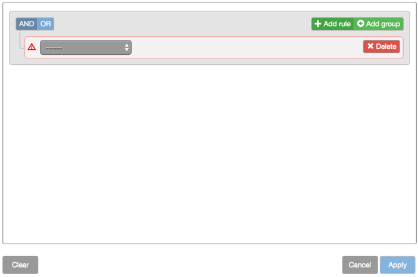

Creating a filter rule
To create a single filter rule:
-
From the sidebar, click the
 icon to open the Filter builder.
icon to open the Filter builder.
-
Click Add rule.
A blank rule is added.

-
Select the desired field you want to use in the filter; then select the desired criteria for the field.
 Buy Edge > 0
Buy Edge > 0 -
Click Apply.
The contents of the Electronic Eye widget updates to show only those instruments that match the filter rule.
To combine multiple filter rules:
-
Create the first filter rule, as shown above.
-
Click Add rule.
-
Select the desired field you want to use in the filter; then select the desired criteria for the field.
Sell Edge > 0 -
Click AND to require both rules to be true or OR to require only one rule to be true.
In this case, you click OR.
-
Click Apply.
The contents of the Electronic Eye widget updates to show only those instruments that match the combined filter rule.